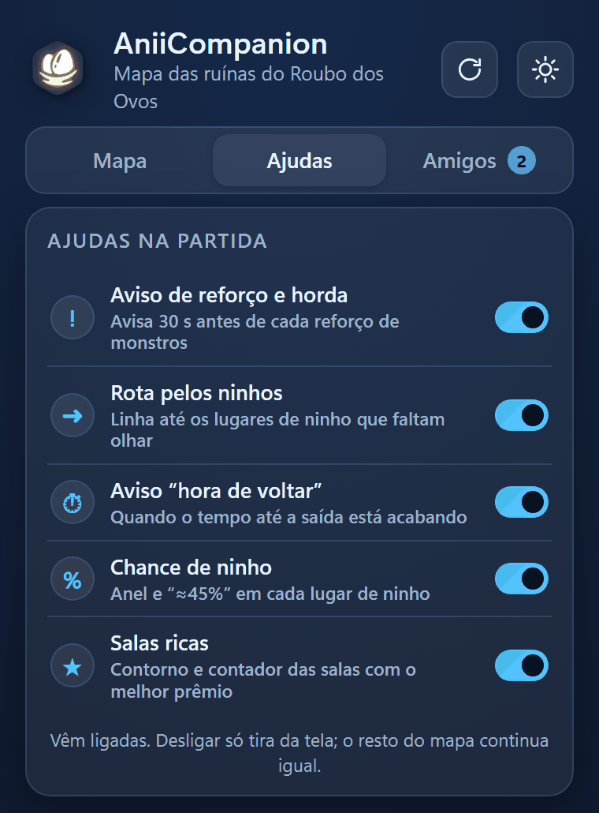
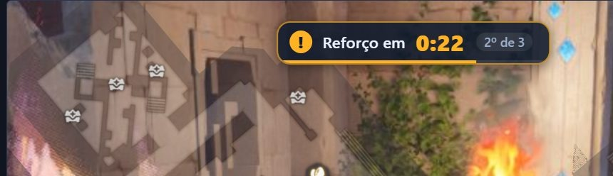
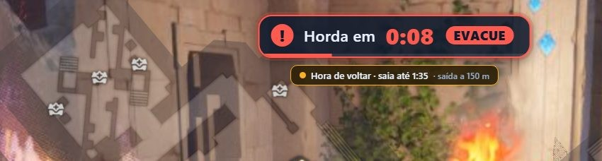
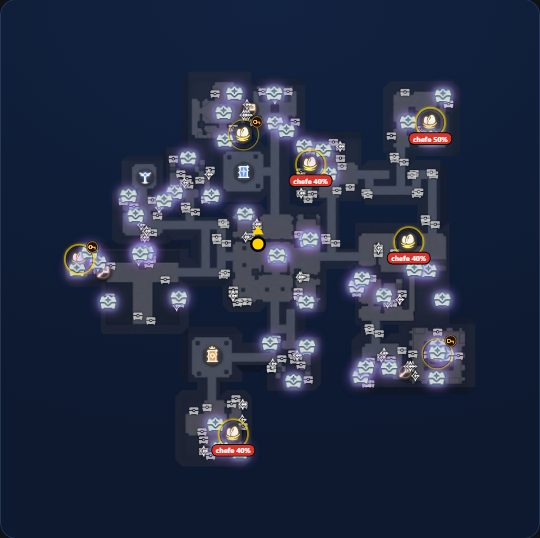
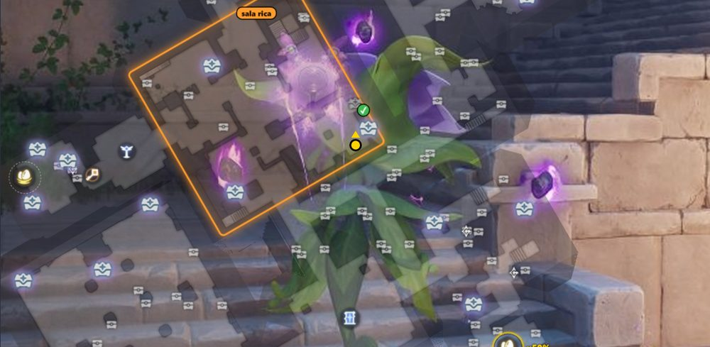

Match aids
Warnings and hints that show up over the map. Each one turns on and off on its own.
First things first
How do I turn the aids on and off?
They all come turned on. Turn off only the ones that get in your way.
- Open the AniiCompanion windowIt is the window with the tabs at the top. It stays open next to the game.
- Go to the “Match aids” tabEach aid has its own on/off switch.
- Click the switchBlue means on. The change is instant and only removes the aid from the screen. The rest of the map stays the same.

The five aids on the tab
- Wave and horde alert. Warns 30 s before each monster wave.
- Route through egg nests. Line to the egg nests still left to check.
- “Time to head back” alert. When the time to reach the exit is running out.
- Nest chance. Ring and “≈45%” on each egg nest.
- Rich rooms. Outline and counter for the rooms with the best prize.
Timing
Wave and horde alert
A countdown at the top of the screen, 30 seconds before the game releases more monsters.


| What it is | The game sends three waves of monsters. The third is the horde: time to leave the sanctum. |
|---|---|
| How it looks | A card at the top centre: “Wave in 0:27”. For the horde it says “Horde in …” with an “EVACUATE” badge. With the bag, a chest or a menu open, the map hides but the alert stays, even in the small window. F1 hides everything. |
| Switch | “Wave and horde alert”. |
There the time shows with a “≈” and a dashed border, because it has not been checked in a real match yet.
Path
Route through the nests
A line through the nest spots you have not looked at yet.

| What it is | A blue line through the nest spots not seen yet. The numbers show the order. The dotted part is the rest of the way. |
|---|---|
| How it looks | Nests inside key rooms are left out. When the horde is coming, the line turns into the path to the nearest exit, in green. |
| Switch | “Route through egg nests”. |
Time to head back
The alert compares the time left on the clock with the time it takes to walk to the nearest exit.
It reads “Time to head back · leave by …” and, when time is running out, “Leave now!”.
Its switch is “Time to head back” alert, separate from the route switch.
The estimate assumes a slow walk. If you run through the sanctum, leave a little later than the alert says.
Nests
Nest chance
In every match the game draws where the nests are. The app shows the chance for each spot.

| What it is | The chance that a nest exists in each spot, in this match. It is recalculated every time you find a nest or look closely at a spot. It is approximate, hence the “≈”. |
|---|---|
| How it looks | A ring around the spot: the thicker and brighter, the higher the chance. Above 40% the number shows, like “≈45%”. The “boss N%” tag is the chance that the boss is in that room. |
| Switch | “Nest chance”. |
Nest colors
- Gold: may still hold an egg.
- Green with ✓: already searched. The app sees the ✓ on the game’s minimap, including your friend’s.
- Gray: you stayed about 3 seconds close, left the room, and 30 seconds went by with no egg and no ✓. The app infers the spot is empty.
Just running past does not change the color. When a single spot is left, the ring turns strong yellow with “only this one left”. That is elimination maths, not certainty.
Nests
Nests in Key Rooms
Is the key worth spending? The app gives you an idea.

| What it is | The chance that the nest exists if you open the door. It helps you decide whether the key is worth spending. |
|---|---|
| How it looks | A ring with a key hanging from it and the number “≈50% with key” beside it. The value changes with the room. |
| Switch | It goes with “Nest chance”. |
The value depends on the room: ≈50%, ≈25%, ≈20% or ≈15%. Finding or not finding a nest in an ordinary room does not change a key room’s number.
Rewards
Rich rooms
The rooms with the best prize of the match.

| What it is | Every match has 1 rich room in Nightmare and 2 in Chaos. Normal and Hard have none. The app only finds out which one it is when a rare chest in that room is opened, by you or a friend. |
|---|---|
| How it looks | An orange outline labelled “rich room” on the room, and a counter at the top of the screen, like “Rich rooms: 1 of 2” in Chaos. |
| Switch | “Rich rooms”. It also covers the Prismana counter and glow. |
Rewards
Chest types
Which chests are on the map and where each type can appear.

| What it is | The map shows the type of each chest. The game draws which chests exist in each match, so the app shows where each type can be. |
|---|---|
| How it looks | Chest icons on the map. With a filter on, a dashed ring marks a spot that can also be another type of chest. |
| Switch | “Map” tab, “Icons and trail”, then “N of M ›” on the chest icon. |
Rewards
Prismana item
Which rare chests can still give the item in this match.

| What it is | A rare chest with a glow can still give the Prismana in this match. Every time a rare chest is opened, yours or a friend’s, the app removes the glow from the ones that no longer can. |
|---|---|
| How it looks | A glow on the possible rare chests and a counter, like “Prismana: 12 possible spots (2 with key)”. The number changes every match. |
| Switch | It goes with “Rich rooms”. |
- An opened chest gets a ✓. Gray is one you opened. Colored with a white ✓ is one a friend opened.
- A closed chest does not show on the game’s minimap. Walking through the room teaches the app nothing.